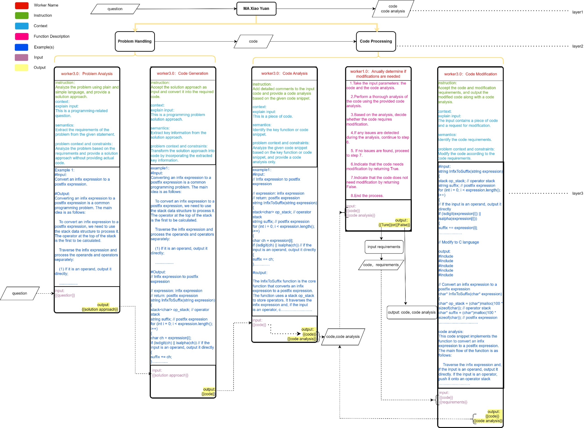
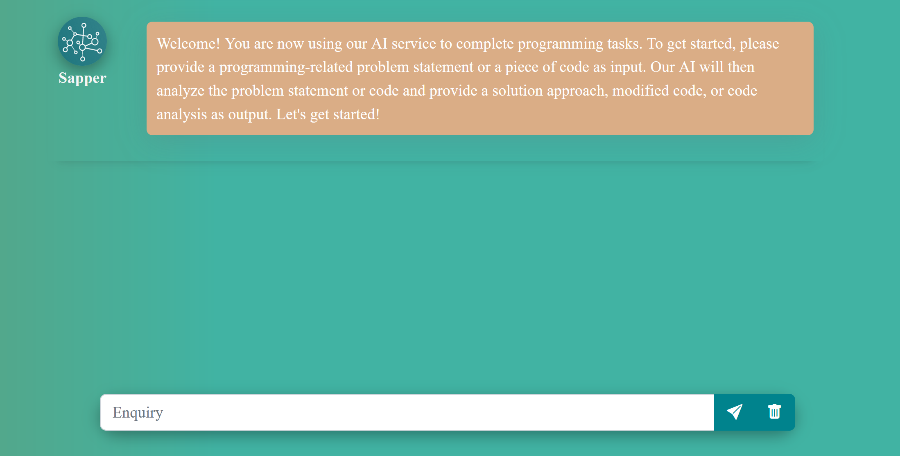
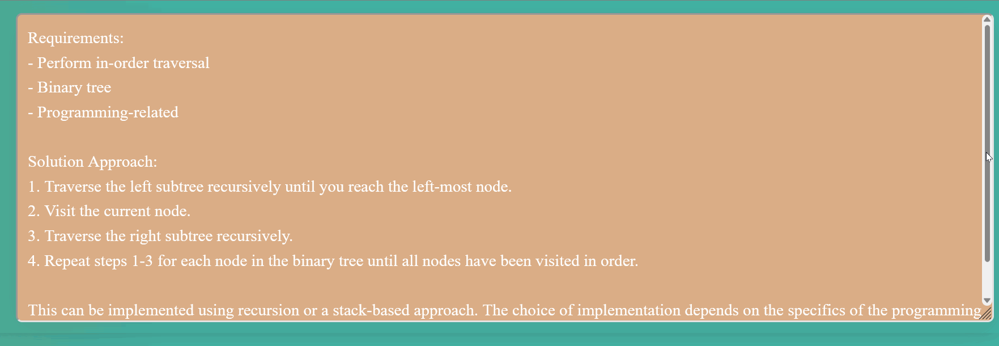
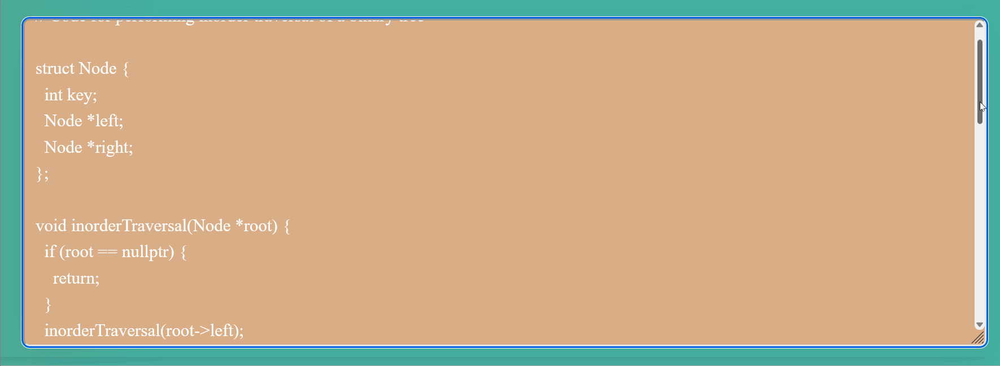
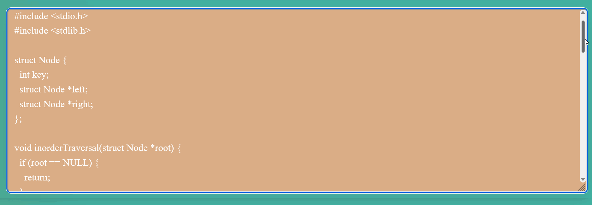
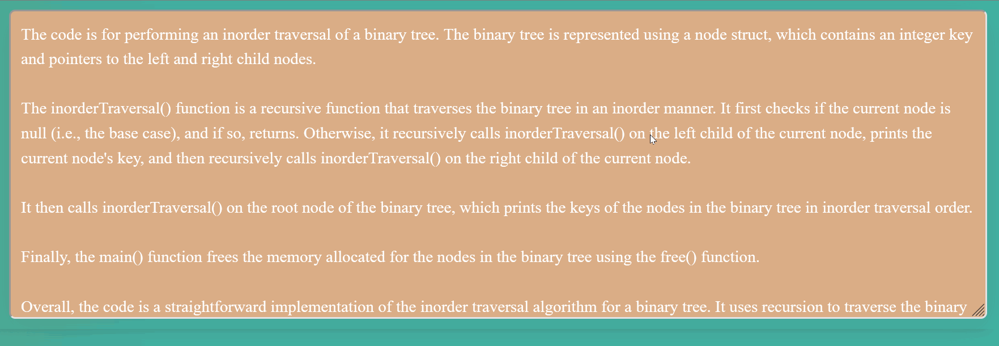

Code Little Ape——Your intelligent programming assistant.
Making coding accessible, Code Little Ape is here to lend a hand!
Author:Hang Xie
What's Code Little Ape ?
Code Little Ape is an innovative, AI-powered tool specifically designed to assist individuals who are learning to code, enabling them to rapidly acquire and master programming skills. By leveraging the power of artificial intelligence and machine learning, this cutting-edge platform adapts to each user's unique learning style, offering personalized guidance and support throughout the learning process.
Why do I develop Code Little Ape ?
As a computer programming major in college, I am learning about programming. I find that learning code is not easy for programming learners. I often encounter problems that I cannot solve, and even with the help of search engines, it takes a lot of time to find solutions. This wastes a lot of time and makes learning code boring. In order to make learning more efficient and convenient, I tried using Chat GPT for assistance. I found that GPT has an amazing accuracy for basic and some intermediate to advanced code. Therefore, I used the API provided by Chat GPT, and based on my experience with GPT and the patterns I have summarized, I developed Code Little Ape using AI Chain technology. This allows more people to enjoy the convenience of GPT, and I hope more people will join the development of AI Chain.
Who is Code Little Ape facing towards?
Code Little Ape is targeted towards computer programming learners, students, and enthusiasts who are looking for a more efficient and convenient way to learn and solve coding problems. The tool aims to help users by leveraging the power of Chat GPT, making their programming journey more enjoyable and less time-consuming.
How did I develop Code Little Ape
The development of Code Little Ape is not always smooth sailing.
The initial exploration:
At first, I created a small Q&A module that could accept my questions and output answers. However, it wasn't very useful because the answers from GTP were often misleading and incorrect for some questions. To solve these problems, I tried adding more modules to correct this issue. But as I made more and more changes, the running time increased significantly. Eventually, I had to find a new solution.
The new solution:
My solution was to use AI Chain technology. With AI Chain technology, I was able to modularly design Code Little Ape. I summarized my experience in instructions, context, examples, output format, etc., and refined it using the rapid building feature of Sapper. With the lessons learned from previous failures, I quickly completed the construction of Code Little Ape and debugged it using Sapper, with perfect results. Through AI Chain and Sapper, everyone can quickly build their own ideas.
How does Code Little Ape work?
The AI-chain design for "Code Little Ape" is a multi-layered system that streamlines user interaction, core functionality, and specialized worker modules to efficiently facilitate code generation, analysis, learning, and optimization.

Figure-1: AI Chain of Code Little Ape
The above image illustrates how Code Little Ape uses AI Chain to implement its code learning assistance functionality. Taking the Problem Handing module as an example:
In the code processing module, I added a judgment component that requires users to evaluate the outputted code and decide whether or not to modify it. It's okay if you don't understand the code, as it will be analyzed before any modifications are made. In this way, AI Chain technology can accurately produce the desired output.
Code Little Ape's live demonstration:
The user interface of Code Little Ape is very simple. It consists of an input text and an output text.

User interface
Let's input a question into the input box.

Question Handing
Code Little Ape will analyze the problem, generate corresponding code, and analyze the code.Code analysis can be used to deepen understanding of code and assist with learning.
Problem analysis
Code

Code analysis
If you want to modify the code, you can input "Needs modification" and then enter your requirements.
Determine if the code needs to be modified.
Return modified code and code analysis.
Modified code
Code analysis
This is the full demonstration of Code Little Ape, and I believe you've noticed Sapper. That's right, Code Little Ape is an AI Chain tool built on Sapper. We welcome more people to join us and use Sapper to develop excellent AI Chain tools.